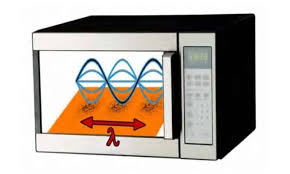
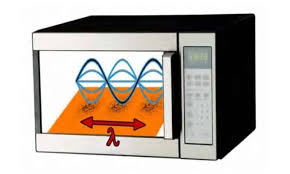

Ondas Eletromagnéticas
Ondas eletromagnéticas, diferentemente das ondas mecânicas, não precisam de um meio para se propagar
e apresentam velocidade muito alta, aproximadamente 3.10 m/s.
As ondas eletromagnéticas podem ser geradas por meio da oscilação de cargas elétricas de modo que a
carga acelere em todos os pontos de sua trajetória, ou quando ocorrem transições de elétrons ligados
a átomos e moléculas para estados energeticamente menores. As ondas geradas pelas oscilações são
constituídas por um campo elétrico e um magnético perpendiculares em si.


Ondas de Rádio
- O QUE É
As ondas de rádio são uma forma de radiação eletromagnética, que não transporta matéria, mas transporta energia.
- APLICAÇÕES
Elas são amplamente usadas em tecnologias de comunicação e outros campos, como:
COMUNICAÇÃO -> Rádio FM e AM, Transmissões de televisão, Telefonia celular, Redes Wi-Fi, Comunicação por satélite.
NAVEGAÇÃO -> Sistemas GPs, Radar.
- SAÚDE
As ondas de rádio têm aplicações significativas na área médica:
Ressonância Magnética: para criar imagens detalhadas de órgãos internos
Radioterapia: por ser uma onda de alta frequência são usadas para destruir células cancerígenas (embora mais comum com micro-ondas ou raios gama).
Monitores de sinais vitais: equipamentos como monitores cardíacos podem usar ondas de rádio para transmitir dados.

- AMPLITUDE

- FREQUÊNCIA
3 kilohertz (3 kHz ou 3.10³ Hz) e 300 giga-hertz (300 Ghz ou 300.109 Hz)
- NÃO IONIZANTES
Ondas de rádio são não ionizantes e não afetam a saúde humana

Ondas de micro-ondas
- O QUE É
O micro-ondas não é apenas um eletrodoméstico capaz de aquecer alimentos, ele tem o princípio de funcionamento na emissão de ondas eletromagnéticas de menor frequência que a luz, em uma faixa denominada de micro-ondas.
Durante a segunda guerra mundial era usados para detectar aviões (a fuselagem das aeronaves refletia ondas eletromagnéticas, tornando possível prever a aproximação de um possível inimigo.)
- APLICAÇÕES
As micro-ondas têm uma variedade de usos em diferentes áreas:
COMUNICAÇÃO -> Telefone celular, Wi-fi, Bluetooth, Transmissão via satélite
RADAR E NAVEGAÇÃO -> GPS, Radar.
AQUECIMENTO -> Forno de micro-ondas
RADIOTERAPIA E TRATAMENTOS MÉDICOS -> Ressonância Magnética, Radioterapia e tratamentos médicos
- SAÚDE
Embora as micro-ondas tenham muitos usos benéficos, elas também podem ter efeitos adversos se não forem controladas adequadamente:
Tratamentos médicos: Em terapias de aquecimento profundo, micro-ondas podem ser usadas para tratar condições como dor muscular ou inflamação. Também são usadas em tratamentos de câncer, onde as micro-ondas podem ajudar a destruir células cancerígenas por aquecimento (chamado de hipertermia).
Riscos: Se houver exposição excessiva e descontrolada a micro-ondas (em níveis muito elevados), elas podem aquecer os tecidos do corpo e causar danos. Por isso, dispositivos como fornos de micro-ondas domésticos são projetados para evitar vazamento de radiação.
- AMPLITUDE

- FREQUÊNCIA
O micro-ondas opera em 2.450 MHz
- NÃO IONIZANTE
 

Ondas de Infravermelho
- O QUE É
As ondas infravermelhas pertencem ao “bloco” de ondas de frequência abaixo do espectro do visível. Esse tipo de frequência é muito utilizado como emissora de sinal eletrônico, como em controles remotos, e no funcionamento de câmeras noturnas, ou em modo noturno, que captam as ondas infravermelhas emitidas
- APLICAÇÕES
AQUECIMENTO E CULINÁRIA -> Lâmpada de aquecimento
COMUNICAÇÃO SEM FIO -> Controle remotos
DETECTAÇÃO E SENSORES -> Câmeras térmicas, sensores de movimento
ASTRONOMIA -> Observação de corpos celestes
DEFESA E SEGURANÇA -> Visão noturna, dispositivos de detecção
MEIO AMBIENTE -> Monitoramento ambiental, sensores de qualidade do ar
- SAÚDE
As ondas infravermelhas têm várias aplicações na saúde, principalmente devido à sua capacidade de gerar calor e interagir com os tecidos humanos. Elas são usadas principalmente para tratamentos terapêuticos e diagnóstico.
Terapia de aquecimento: Fisioterapia e reabilitação: Terapias de aquecimento com infravermelho são comumente usadas em tratamentos de fisioterapia, como no tratamento de lesões crônicas (ex.: artrite, bursite) ou após lesões agudas, para reduzir a rigidez muscular e aliviar a dor
Tratamentos estéticos: Tratamentos de rejuvenescimento da pele: A radiação infravermelha pode estimular a produção de colágeno e elastina, substâncias essenciais para manter a firmeza e elasticidade da pele, promovendo o rejuvenescimento facial e a redução de rugas.
Tomografia infravermelha: A termografia infravermelha é útil para identificar inflamações, infecções e até mesmo tumores. Diferentes condições médicas, como infecções ou problemas circulatórios, podem causar diferenças de temperatura no corpo, que podem ser detectadas por câmeras infravermelhas.
- AMPLITUDE

- FREQUÊNCIA
Frequências desde 1011 Hz até 1014 Hz, aproximadamente
- NÃO É IONIZANTE


A onda eletromagnética que enxergamos
No vácuo, sabemos que a luz visível, como toda onda eletromagnética, pode viajar a uma velocidade de aproximadamente 3.108 m/s e é a única que o olho humano pode detectar, sendo também denominada de espectro visível, compreendendo um pequeno intervalo de espectro eletromagnético. A luz visível é formada por infinitas cores, e cada cor possui uma determinada frequência. A detecção dessas ondas juntas forma a luz branca, onde surge a expressão de que o branco é a junção de todas as cores juntas.
Se interessou? Que tal assistir um vídeo e aprender um experimento!
Ondas Ultravioleta
- O QUE É
A radiação ultravioleta possui uma faixa de frequência entre a luz visível e os raios X e pode ser subdividida em UVA, UVB, UVC, não sendo visíveis a olho nu. Em maior parte emitida pelo Sol, pode nos causar sérios problemas de saúde, como envelhecimento precoce, problemas de visão, câncer de pele, entre outros malefícios. Por isso, a precaução por meio da utilização de protetores solares nos horários em que são mais intensos, entre outros fatores.
- APLICAÇÕES
CIÊNCIAS E PESQUISA -> Microscopia fluorescente
SEGURANÇA -> Iluminação forense
BELEZA E LAZER -> Bronzeamento artificial
AGRICULTURA -> Estimulação de crescimento, controle de pragas

- SAÚDE
As ondas ultravioleta (UV) têm diversas aplicações na área da saúde devido às suas propriedades únicas. Contudo, seu uso requer cuidado, pois a exposição inadequada pode causar danos à pele e aos olhos
Produção de Vitamina D: UVB (280-315 nm): Estimula a produção de vitamina D na pele, essencial para a saúde óssea e o funcionamento do sistema imunológico. Benefícios: Prevenção de doenças como osteoporose e raquitismo. Recomendações: Exposição moderada ao sol para evitar riscos à saúde
Tratamento de Doenças de Pele: Psoríase e Vitiligo: Terapias baseadas em UVB (fototerapia) ajudam a reduzir inflamações e estimular a repigmentação da pele. Eczema e acne: Algumas condições dermatológicas podem ser tratadas com luz UV controlada.
Riscos e Precauções: Riscos: Exposição prolongada pode causar queimaduras, envelhecimento precoce, câncer de pele e danos aos olhos. Proteção: Uso de protetor solar, óculos escuros e roupas adequadas é essencial para evitar danos.
- AMPLITUDE

- FREQUÊNCIA
Apresenta uma elevada frequência, de no máximo 1018 Hz.
- IONIZANTE
Radiação ionizante é um tipo de radiação que contém energia suficiente para ionizar átomos, ou seja, arrancar-lhes elétrons. Ela pode causar malefícios à saúde.

Ondas de Raio X
- O QUE É
Têm a capacidade de interagir com estruturas nucleares. Ao interagir com o corpo humano, parte dessa radiação é absorvida, o que permite a realização de exames de imagem e explica o motivo pelo qual os técnicos em radiologia se ‘escondem’ na hora de realizar exames.
Como qualquer outra onda eletromagnética, eles estão sempre sujeitos aos fenômenos da refração, reflexão, difração, polarização e interferência.
Vale lembrar que esse raio possui ações benéficas e maléficas. A exposição demorada a esse raio pode causar sérios danos à saúde, como lesões cancerígenas, morte de células, leucemia, entre outros.
- APLICAÇÕES
INDÚSTRIA -> Inspeção de materiais, como nos aeroportos
CIÊNCIA E PESQUISA -> Análise de materiais, esterilização
- SAÚDE
Radiografia: São usadas para identificar fraturas ósseas, luxações, cáries dentárias, infecções pulmonares (como pneumonia) e outras condições.
Mamografia: Um exame específico de raios X usado para a detecção precoce de câncer de mama.
Tomografia Computadorizada (TC): Combina raios X com processamento digital para criar imagens detalhadas e em 3D de órgãos, tecidos e ossos.
Radioterapia: Raios X de alta energia são utilizados para tratar cânceres ao destruir células tumorais.

- AMPLITUDE

- FREQUÊNCIA
Varia entre 3,1016 Hz e 3,1019 Hz
- ONDAS IONIZANTE

Ondas de Raio Gama
- O QUE É
São ondas eletromagnéticas de altíssima energia, podendo ser milhões de vezes mais energéticos que os raios ultravioletas. Esse tipo de onda é gerado no interior de núcleos atômicos instáveis e, por sua alta penetrabilidade, só pode ser barrado por placas espessas de chumbo ou concreto. Apesar de ser tão energético, de frequência elevada, possui aplicação na medicina por reagir com células, permitindo seu uso para tratamentos de tumores, o que conhecemos como radioterapia
- APLICAÇÕES
ENERGIA E PESQUISA NUCLEAR -> Monitoramento de Reatores Nucleares, estudo de elementos radioativos
APLICAÇÕES MILITARES -> Pesquisa em armas nucleares, incluindo a análise da radiação gama gerada durante explosões atômicas.

- SAÚDE
É empregada na higienização de equipamentos e alimentos, radioterapia, tomografia por emissão de pósitrons e na cirurgia Gamma Knife
As ondas gama desempenham um papel crucial em várias áreas da saúde, desde o diagnóstico precoce de doenças até o tratamento de câncer e a esterilização de materiais médicos. Contudo, seu uso deve ser cuidadosamente monitorado devido ao potencial de dano celular.
- AMPLITUDE

- FREQUÊNCIA
Superior a 1018 Hz
- ONDA IONIZANTE

Ondas Mecânicas
Onda mecânica é uma perturbação que se propaga em um meio material e é capaz de transportar energia.
As ondas mecânicas são vibrações ou perturbações no meio carregando energia. Essas ondas não carregam matéria e precisam de um meio para se propagar, diferentemente das ondas eletromagnéticas.
Classificação
As ondas mecânicas podem ser classificadas de duas formas: em relação à sua direção de vibração e sua direção de propagação.
Com relação à direção de vibração, uma onda pode ser:
Transversais: a vibração feita para produzir a onda é perpendicular (forma um ângulo de 90°) à sua propagação. Exemplo de onda transversal: uma pedra caindo em uma poça d’água.
Longitudinais: a vibração que produz a onda é paralela (mesma direção) à sua propagação. Exemplo de onda longitudinal: ondas sonoras.
Com relação à sua direção de propagação, uma pode ser:
Unidimensional: propaga-se apenas em uma única direção. Exemplo: uma corda de violão.
Bidimensional: propaga-se em até duas direções. Exemplo: uma pedra caindo em um lago.
Tridimensional: propaga-se em várias direções. Exemplo: uma onda sonora.
Características
Amplitude
A amplitude corresponde à altura da onda, marcada pela distância entre o ponto de equilíbrio (repouso) da onda até a crista. A crista representa o ponto máximo da onda, enquanto o vale é o ponto mínimo.
Comprimento de Onda (λ)
O comprimento de onda é a distância entre dois vales ou duas cristas sucessivas. Representado pela letra grega λ, ele indica a extensão de um ciclo completo da onda.
Velocidade (v)
A velocidade de uma onda depende do meio em que ela se propaga. Mudando de meio, a velocidade da onda pode variar. A velocidade é representada pela letra v.
Frequência (f)
A frequência corresponde ao número de oscilações da onda em determinado intervalo de tempo, sendo medida em hertz (Hz). A frequência não depende do meio de propagação, apenas da fonte que gera a onda.
Período (T)
O período é o tempo necessário para a onda completar um ciclo (comprimento de onda). A unidade de medida do período é o segundo (s).